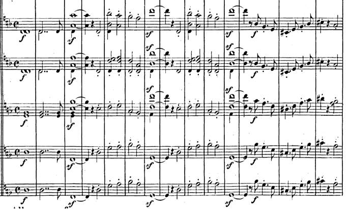
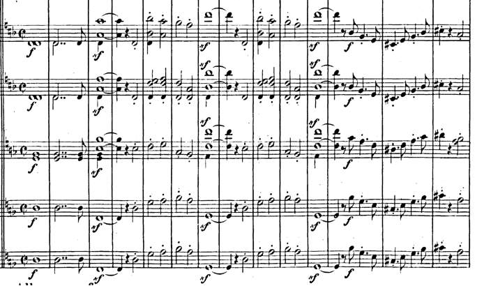
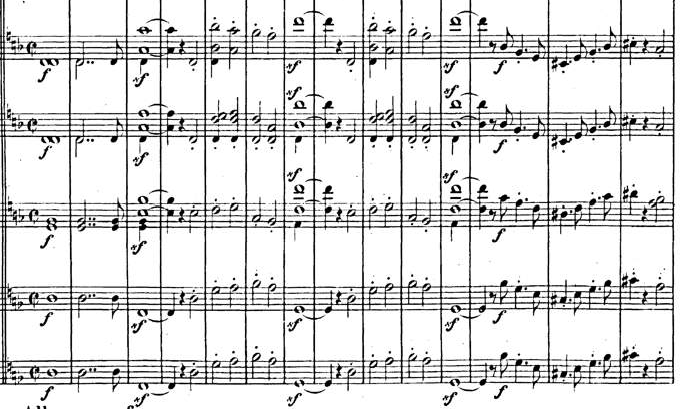

Learning is also a very social. Learning often involves someone teaching you something, whether it is a physical teacher
like in school, or an online teacher from a Youtube video, or from a book that teaches you something (Lecture 2). Learning to compose
is also a very social thing. One rarely writes music for themselves - they write it for someone to play or
listen to it. A great quote from Victor Hugo expresses how music can teach you things that cannot be learnt in any other way:
"Music expresses that which cannot be said and on which it is impossible to be silent" - Victor Hugo (ClassicFM)
One can learn to compose with a composition teacher, either at school or by finding a private teacher. I have personally seeked help
from my previous orchestra conductor who is a famous Canadian composer, as well as my high school band teacher. My band teacher is especially
helpful when I write band music because she is able to tell me if my pieces are playable on all the band instruments, as well as gives
me ideas when I am stuck.
Nowadays, there are many online
communities of composers (like in Facebook groups) that are there to give advice on others' compositions and that can help inspire
aspiring composers. Ertmer & Newby (2013) realized that recently, much of our learning occurs through conversation because knowledge
and other people are much more accessible through the Internet.
Social Cognitive Theory
This theory aligns with the fact that learning is very social. It proposes that much of our learning happens through obersation of others, practising,
and then getting feedback about our performance from others (Schunk, 20xx). As mentioned here, learning is often defined
by experiences, including other pepole we encounter or inspire us. Schunk (20xx) mentions that we tend to replicate behaviour from people who are more similar to
us because then it is more likely that we obtain the same outcome as them.
Different cultures have different music, so it seems natural that composers from different cultures have different composing styles, and that future people coming
from similar cultures adopt similar styles as well. It even goes as far as different cultures have different scale modes. Because I was born in Canada, and my ancestry
is European, I am very much more likely to adopt Western composition techniques and methods. I use common Western tonal scales for instance. Perhaps if I had had an Asian
background, I would have been more influenced by Asian composers and modes in my pieces. Although it is extremely common to borrow interesting aspects of different cultures
to make a piece interesting or to make it express a certain story (example: Borodin Steppes of Central Asia has an Oriental theme even though he's Russian).
Insert example of different modes
Modelling
There are several criteria that define a good model.
Competence: the model is an expert at the topic. This is why we would seek feedback from other
people who have composed before because they can give valuable tips on how to write certain passages, or how to express your ideas in music. For instance,
I have learnt from my band teacher the importance of writing rhythms in a way that makes it easier to interpret for music students. I learned that it is easier
to write syncopated rhythms by emphasizing where the beats are.
Power & Prestige: the model is well known and influential. Composers will often be influenced by the big names in classical music: Beethoven, Bach,
Chopin, Debussy, etc. because they were known to have created very influential pieces of music that we still know and play to this day. My style has certainly been
influenced by these great composers to the point where I model and use their melodies as a starting point for an idea. The following example
is the introduction for a piece that is heavily inspired by Mendelssohn's "Reformation" Symphony.

Source: IMSLP
Relevant:the model is someone who is similar to the learner. Composers will probably be inspired by people whose pieces they enjoy so they might write
more like them. Furthermore, composers would probably have models that come from similar cultures. Because I was born in Canada, and my ancestry
is European, I am very much more likely to adopt Western composition techniques and methods. I use common Western tonal scales for instance. Perhaps if I had had an Asian
background, I would have been more influenced by Asian composers and modes in my pieces. Although it is extremely common to borrow interesting aspects of different cultures
to make a piece interesting or to make it express a certain story (example: Borodin Steppes of Central Asia has an Oriental theme even though he's Russian).
Several cognitive processes are involved in modelling (make the connections with memory and attention here)
Expertise
Experts are people who can solve and think about problems in a certain domain efficiently (Lecture 5). There are three key features that experts
have in common.
Meaningful and organized knowledge: experts possess a wide range of knowledge in their area of expertise (Lecture 5). Not only that, but they also are
able to form deep connections between these topics. They can see patterns with information they learn which helps with coming up with stategies
to solve problems. Expert composers probably have a toolkit of different composition techniques that they have learnt. ** connection to deep processing
Conditionalized knowledge: experts know under which circumstances to use their knowledge (Lecture 5). This makes them more efficient because they don't
need to search through their knowledge and apply all trategies they know. Perhaps expert composers will pick certain strategies when they want to
convey a specific idea. They likely won't try to use a series of major chords to convey a feeling of depression!
Automaticity: experts become more automatic thinking about certain things, which leaves them room in their working memory to deal with more
complex problems (Lecture 5). For instance, modern composers who use notation software to write music might become experts in that software so that they don't need to spend their
efforts trying to figure out how to add a piano pedal when they could be spending that time coming up with new ideas for a conclusion of their piece. This comes from lots
of repetition and dedication to learning. Or perhaps a composer wants to change from one key to another. I know there are
specific ways of modulating to a different key (that I do not know because I am not an expert), so an expert composer might know how to do so off the top of their head,
while a novice like myself will have to try different chord combinations until I find one that sounds good to get the effect I want.
References
Lecture 2: What is Learning?
24 inspirational quotes about classical music. ClassicFM. https://www.classicfm.com/discover-music/latest/quotes-about-classical-music/
Ertner, P.A., Newby, T.J. (2013). Behaviorism, Cognitivism, Constructivism: Comparing Critical Features From an Instructional Design Perspective. Performance Improvement Quarterly, 26(2), 43-71. DOI: 10.1002/piq
Schunk, XXX. Social Cognitive Theory & Self Regulated Learning

 
